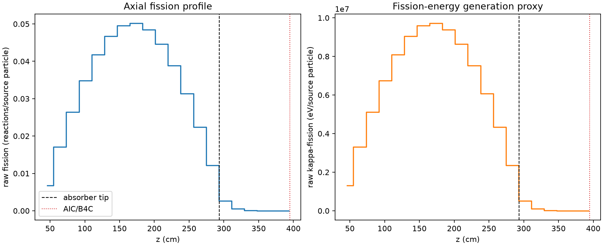
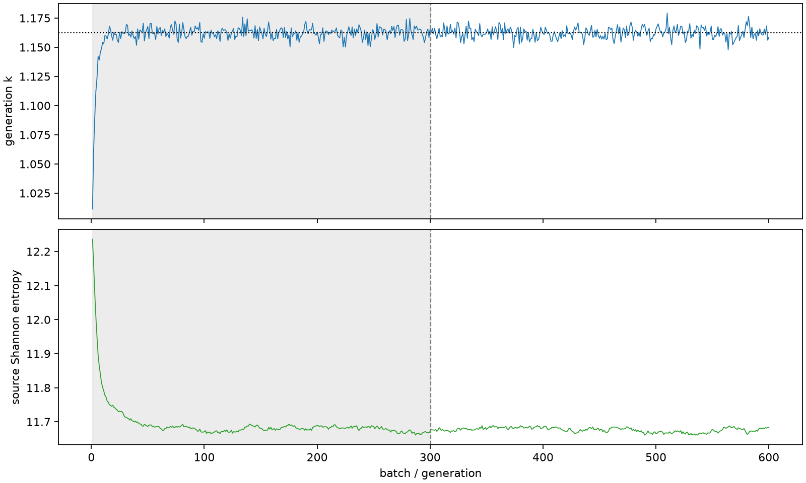

| field | value |
|---|---|
| experiment | V2-STAGE_256_OGRENCI_03-0004 |
| k | 1.162491114227804 |
| MC standard error | 0.00018019423986024484 |
| seconds | 1327.6665537160006 |
| acceptance | not_assessed |
| convergence | review_required |
Completed is output integrity only; physical and statistical review required. Zero tallies do not prove zero production or zero uncertainty.
| diagnostic | value |
|---|---|
| geometric fuel voxels | 5280 |
| zero fission tally voxels | 22 |
| low signal fuel voxels | 790 |
| low signal fission share | 6.544294454681708e-05 |
| low signal kappa share | 6.547204701659403e-05 |
| important fission share | 0.9501053578422649 |
| previous filter included | 4490 |
| duration estimate s | 1562.5173488400023 |
| actual minus estimate s | -234.8507951240017 |
| fission relative MC error | statistics |
|---|---|
| all_geometric_fuel | {"voxels": 5280, "positive_mean_voxels": 5258, "zero_mean_voxels": 22, "undefined_relative_error_voxels": 22, "median": 0.009792532557100843, "p95": 0.6087286791983073, "maximum": 1.0000000000000002} |
| low_signal | {"voxels": 790, "positive_mean_voxels": 768, "zero_mean_voxels": 22, "undefined_relative_error_voxels": 22, "median": 0.47538399603593257, "p95": 1.0, "maximum": 1.0000000000000002} |
| important_95pct | {"voxels": 3145, "positive_mean_voxels": 3145, "zero_mean_voxels": 0, "undefined_relative_error_voxels": 0, "median": 0.007652863384109868, "p95": 0.011294672389437299, "maximum": 0.014235974108787033} |
| outside_previous_filter | {"voxels": 790, "positive_mean_voxels": 768, "zero_mean_voxels": 22, "undefined_relative_error_voxels": 22, "median": 0.47538399603593257, "p95": 1.0, "maximum": 1.0000000000000002} |
| kappa_fission relative MC error | statistics |
|---|---|
| all_geometric_fuel | {"voxels": 5280, "positive_mean_voxels": 5258, "zero_mean_voxels": 22, "undefined_relative_error_voxels": 22, "median": 0.009782246133402828, "p95": 0.6095393785161597, "maximum": 1.0000000000000002} |
| low_signal | {"voxels": 790, "positive_mean_voxels": 768, "zero_mean_voxels": 22, "undefined_relative_error_voxels": 22, "median": 0.4752662979227609, "p95": 1.0, "maximum": 1.0000000000000002} |
| important_95pct | {"voxels": 3145, "positive_mean_voxels": 3145, "zero_mean_voxels": 0, "undefined_relative_error_voxels": 0, "median": 0.007643934451086462, "p95": 0.011281924949768988, "maximum": 0.014220294979888144} |
| outside_previous_filter | {"voxels": 790, "positive_mean_voxels": 768, "zero_mean_voxels": 22, "undefined_relative_error_voxels": 22, "median": 0.4752662979227609, "p95": 1.0, "maximum": 1.0000000000000002} |
| axial bin | fission share | kappa-fission share |
|---|---|---|
| 1 | 0.014246984645229619 | 0.014247653681167156 |
| 2 | 0.03610440357068473 | 0.03610436849518006 |
| 3 | 0.0556925329041327 | 0.05569239946875222 |
| 4 | 0.07341315439552014 | 0.07341274127034063 |
| 5 | 0.08799009029951003 | 0.08799005861122935 |
| 6 | 0.09851739688661261 | 0.09851692556943045 |
| 7 | 0.1044084645049314 | 0.10440795814624937 |
| 8 | 0.10570163452255751 | 0.1057013315639787 |
| 9 | 0.10203819422796356 | 0.10203791983941954 |
| 10 | 0.09408350086125188 | 0.0940830761348966 |
| 11 | 0.08186911351773069 | 0.08186885930868582 |
| 12 | 0.06613041216695839 | 0.06613007270117875 |
| 13 | 0.04713114304450347 | 0.04713101720089038 |
| 14 | 0.025688899149648368 | 0.025688944075469254 |
| 15 | 0.005577678819454799 | 0.005579630697572572 |
| 16 | 0.0011095720449622965 | 0.0011100701193593402 |
| 17 | 0.00023097404602506289 | 0.0002310935941617315 |
| 18 | 5.2978923697682626e-05 | 5.300365293946321e-05 |
| 19 | 1.1635543746489564e-05 | 1.1638976564833244e-05 |
| 20 | 1.2359248785897259e-06 | 1.2368925337119016e-06 |
Histories include the inactive-to-active transition at batch 300. kappa-fission approximates fission energy production, not total heat deposition.

